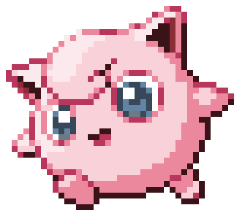

What Are Pokémon's?
Pokémon's are creatures of all shapes and sizes who live in the wild or alongside humans.
For the most part, Pokémon's do not speak except to utter their names. Pokémon's are raised and commanded by their owners
(called "Trainers"). During their adventures, Pokémon's grow and become more experienced and even, on occasion, evolve
into a stronger Pokémon. There are currently more than 700 creatures that inhabit the Pokémon universe.
Example of this is Jigglypuff this Pokémon is a "Normal/Fairy" type and it evolves from Igglybuff when levelled up with high friendship and evolves into Wigglytuff when exposed to a Moon Stone.
The Stats:
The Stats on the page will give you a brief overview of the types of Pokémon's, how many there
are within certain types.
You can also see the amount the avg Attack, Defence, Speed and HP of Pokémon's in total.
Pokémon List:
Here you can browse through all Pokémon's see their types, and even if they are legendary.
The Goal of a Pokémon trainer is to catch them all, so its a great place to see if you have this type of Pokémon
Pokémon Battles:
To catch Pokémon's you will have to use your own Pokémon to weak it, then you can capture it.
So come and play along
in a simulated game, just remember its random in this game and more a proof of concept then it is to capture it.
For more information please click on the on each page